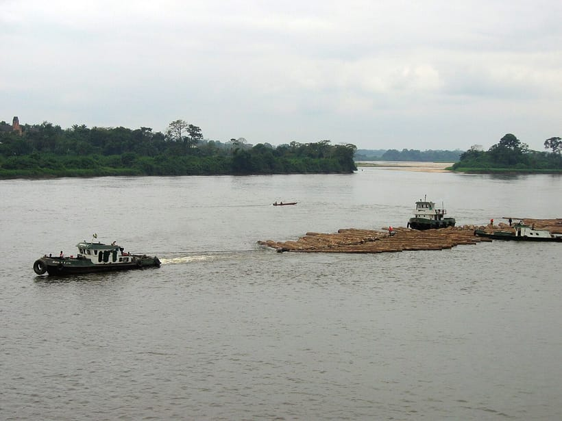

La mairie de Koula-Moutou a signé une convention de coopération avec une entreprise forestière locale pour soutenir la transformation locale du bois et créer 120 emplois directs d'ici 2027.
L'accord prévoit l'installation d'une unité de transformation de deuxième transformation (menuiserie et parqueterie), ainsi qu'un programme de formation aux métiers du bois destiné aux jeunes de la commune. L'objectif : créer davantage de valeur ajoutée sur le territoire plutôt que d'exporter les grumes brutes.
Transformer localement
Premier secteur industriel de la province, la filière forêt-bois représente un fort potentiel d'emplois qualifiés. En favorisant la transformation sur place, la commune entend retenir la richesse produite et offrir des débouchés durables à sa jeunesse.
La convention s'accompagne d'engagements en matière de gestion forestière durable et de respect de l'environnement, en cohérence avec les démarches de certification engagées dans la région.